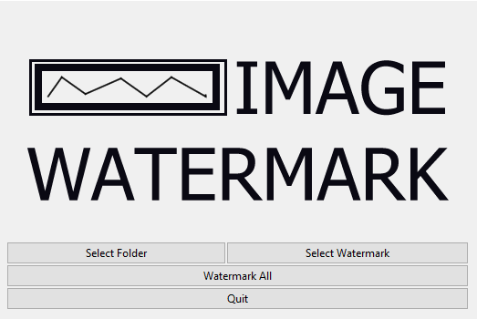

Image Watermarker
The Image Watermarker can apply a single transparent watermark to an unlimited number of images.

The Image Watermarker was written independently as a project for this portfolio. It can take an entire folder of images and apply a transparent watermark across them.
The watermark is expected to be square and transparent. It is then dynamically resized to the width of each submitted image. Because the watermark is a square, it does not skew when resized.
In just a few seconds, an entire folder of watermarked images is created. The user may change folders or watermarks at any time. The GUI is clean and clear, it is built in Tkinter.
The Image Watermarker is often improving and changing. You can view the code in its entirety here:
Image Watermarker on Github